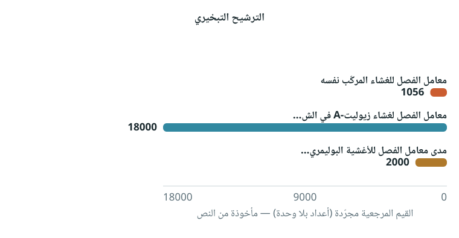

الترشيح التبخيري
Pervaporation
فصل سائل-سائل بغشاء كثيف: المكوّن يذوب في الغشاء وينتشر فيه ثم يتبخّر في جهة التفريغ، فتُكسر الأزيوتروبات دون غليان المزيج كله.
الترشيح التبخيري عملية فصل غشائي يبقى فيها المزيج السائل في جهة التغذية ويخرج المكوّن المنفصل بخارًا من الجهة الأخرى. الغشاء كثيف لا مسامي، فالانتقال ليس جريانًا في مسام بل ثلاث خطوات: ذوبان المكوّن في مادة الغشاء عند سطح التغذية، ثم انتشاره في الغشاء تحت تدرّج الكمون الكيميائي، ثم تبخّره عند السطح الآخر. القوة الدافعة هي فرق الضغط الجزئي للبخار بين جهة التغذية وجهة النفاذ، وتُصنع بضغط منخفض في جهة النفاذ أو بغاز حامل. ولأن الفصل لا يعتمد على التطاير النسبي، تكسره العملية أزيوتروب الإيثانول والماء عند 95 بالمئة إيثانول، وهو ما يعجز عنه التقطير الاعتيادي. والثمن أن الحرارة الكامنة للتبخّر تُؤخذ من المزيج نفسه فيهبط حرارة التغذية على طول الوحدة، وأن التدفق صغير لأن الغشاء كثيف، فتحتاج العملية مساحة غشائية كبيرة لكل متر مكعب من الناتج.
كيف تعمل الظاهرة؟
الآلية ثلاث خطوات متتالية: ذوبان المكوّن في مادة الغشاء عند الواجهة الملامسة للسائل، ثم انتشاره في الكتلة الكثيفة تحت تدرّج الكمون الكيميائي، ثم تبخّره عند الواجهة الأخرى حيث يُخفض ضغط البخار. ولأن الغشاء كثيف، لا يوجد جريان حملي في مسام، فالانتقاء يأتي من فرق الذوبانية وفرق معامل الانتشار معًا لا من حجم ثقب. وفي التجفيف تُستخدم أغشية محبّة للماء تذيب الماء أكثر من الإيثانول، فيمرّ الماء تفضيليًّا ويزداد الإيثانول في المتخلّف. والحرارة الكامنة للتبخّر تُسحب من المزيج السائل نفسه، فيهبط حرارة التغذية على طول الوحدة إن لم تُعوَّض.
العلاقة بالأرقام
التدفق يُقاس بالكيلوغرام لكل متر مربع في الساعة، ومعامل الفصل يُحسب نسبةً بين نسبة المكوّن المفضّل إلى الآخر في الناتج ونسبتهما في التغذية، فهو عدد بلا وحدة. في تجفيف إيثانول 90 بالمئة بالوزن عند 60 درجة مئوية: 3.18 كيلوغرام لكل متر مربع في الساعة مع معامل فصل 1056 لغشاء مركّب بطبقة زيوليت وسيطة. وعند 70 درجة مئوية: 1.12 كيلوغرام لكل متر مربع في الساعة مع معامل 18000 لغشاء زيوليت-A. والأغشية البوليمرية المحبّة للماء تعطي معاملات فصل من 3 إلى 2000 عند تغذية 82–96 بالمئة و15–60 درجة مئوية.
مفاهيم متقاربة
الترشيح التبخيري ليس تقطيرًا غشائيًّا: الغشاء هنا كثيف والمكوّن يذوب وينتشر في مادته، بينما في التقطير الغشائي الغشاء مسامي كاره للماء والبخار يعبر المسام. وليس تقطيرًا تقليديًّا: لا يعتمد على التطاير النسبي ولا يحتاج غليان المزيج كله، ولذلك يكسر أزيوتروب الإيثانول والماء عند 95 بالمئة. وليس تناضحًا عكسيًّا: الناتج بخار لا سائل، والقوة الدافعة فرق ضغط بخاري لا ضغط هيدروليكي. وليس ترشيحًا دقيقًا: لا فصل بالحجم في مسام، بل بالذوبانية والانتشار في كتلة كثيفة.
حدود التطبيق
الحدّ الأول هو التدفق المنخفض: الغشاء الكثيف يقاوم الانتقال، فالمساحة المطلوبة كبيرة والاستثمار عالٍ. والحدّ الثاني هو الانتفاخ: الأغشية البوليمرية المحبّة للماء تنتفخ في الماء فتقلّ انتقائيتها، والتشابك يقلّل الانتفاخ لكنه يقلّل التدفق أيضًا، وهي مقايضة مذكورة صراحةً في المصدر. والحدّ الثالث هو هبوط الأداء بالزمن: في اختبار غشاء سيليكا على تغذية 94 بالمئة إيثانول انخفض التدفق ومعامل الفصل تدريجيًّا حتى استقرّا بعد 6–10 ساعات، وتراوح تدفق الماء بين 0.3 و0.8 كيلوغرام لكل متر مربع في الساعة. والحدّ الرابع: الأرقام من مراجعة تجمع نتائج منشورة على أغشية مختلفة، ولا تُقرأ كقياس أجريناه.

| الكمية | القيمة | المصدر |
|---|---|---|
| تدفق كلي لغشاء مركّب بطبقة زيوليت وسيطة في تجفيف إيثانول 90 بالمئة | 3.18 ± 0.3 kg/(m2·h) | [1] |
| معامل الفصل للغشاء المركّب نفسه | 1056 ± 150 — | [1] |
| تدفق غشاء زيوليت-A في تجفيف إيثانول 89.9 بالمئة | 1.120 kg/(m2·h) | [1] |
| معامل الفصل لغشاء زيوليت-A في الشرط نفسه | 18000 — | [1] |
| مدى معامل الفصل للأغشية البوليمرية المحبّة للماء في تجفيف الإيثانول | 3 إلى 2000 — | [1] |
المصادر
- 1 Ongoing Progress on Pervaporation Membranes for Ethanol Separation — Membranes (MDPI) (2023). mostwiedzy.pl/pl/publication/download/1/ongoing-progress-on-pervaporation-membranes-for-ethanol-separation_88111.pdf · اطُّلع عليه 2026-11-28
- 2 The solution-diffusion model: a review — Journal of Membrane Science (Elsevier) (1995). · اطُّلع عليه 2026-11-28
استشهد بهذا المصطلح
الصيغتان مبنيتان من بيانات الصفحة نفسها: العنوان والتاريخ ورابط النسخة المنشورة.
الترشيح التبخيري — Pervaporation. (2026). ديوان المعرفة — انفراد. https://infiradev.com/diwan/terms/term-pervaporation.html
@misc{term-pervaporation2026,
title = {الترشيح التبخيري},
titleaddon = {Pervaporation},
howpublished = {{ديوان المعرفة — انفراد} — مرجع علمي عربي},
year = {2026},
url = {https://infiradev.com/diwan/terms/term-pervaporation.html},
urldate = {2026-11-28},
note = {مراجعة علمية: Abdullah Al-Huwaidi}
}
راجعه: Abdullah Al-Huwaidi · 2026-11-28 · آخر تحديث 2026-11-28